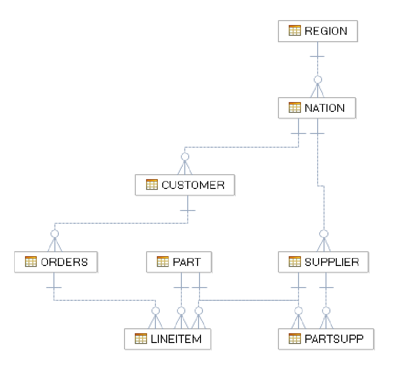

Stored Procedures
Stored Procedures are subroutines that are saved in IBM Performance Server. They are executed inside the database server and are only available by accessing the NPS system. They combine the capabilities of SQL to query and manipulate database information with capabilities of procedural programming languages, like branching and iterations. This makes them an ideal solution for tasks like data validation, writing event logs or encrypting data. They are especially suited for repetitive tasks that can be easily encapsulated in a sub-routine.
Objectives
In the last labs we have created our database, loaded the data and we have done some optimization and administration tasks. In this lab we will enhance the database by a couple of stored procedures. As we mentioned in a previous chapter Netezza Performance Serverdoesn't check referential or unique constraints. This is normally not critical since data loading in a data warehousing environment is a controlled task. In our Netezza Performance Serverimplementation we get the requirement to allow some non-administrative database users to add new customers to the customer table. This happens rarely so there are no performance requirements and we have decided to implement this with a stored procedure that is accessible for these users and checks the input values and referential constraints.
In a second part we will implement a business logic function as a stored procedure returning a result set. TODO describe function.
{width="4.248510498687664in" height="3.9270833333333335in"}
Figure 1 LABDB database
Lab Setup
This lab uses an initial setup script to make sure the correct user and database exist for the remainder of the lab. Follow the instructions below to run the setup script.
-
Login to NPS Command Line using one of these two methods.
a. Login to the VM directly and use the terminal application available inside the VM.
b. Connect to your Netezza Performance Server image using putty
-
If you are continuing from the previous lab and are already connected to NZSQL quit the NZSQL console with the [\q]{.mark} command.
-
Prepare for this lab by running the setup script. To do this use the following two commands:
Input:
[nz@localhost labs]\$ [cd \~/labs/storedProcedure/setupLab]{.mark}
[nz@localhost setupLab]\$ [./setupLab.sh]{.mark}
Output:
DROP DATABASE
CREATE DATABASE
ERROR: CREATE USER: object LABADMIN already exists as a USER.
ALTER USER
ALTER DATABASE
CREATE TABLE
CREATE TABLE
CREATE TABLE
CREATE TABLE
CREATE TABLE
CREATE TABLE
CREATE TABLE
CREATE TABLE
Load session of table \'NATION\' completed successfully
Load session of table \'REGION\' completed successfully
Load session of table \'CUSTOMER\' completed successfully
Load session of table \'SUPPLIER\' completed successfully
Load session of table \'PART\' completed successfully
Load session of table \'PARTSUPP\' completed successfully
Load session of table \'ORDERS\' completed successfully
Load session of table \'LINEITEM\' completed successfully
There may be error message at the beginning of the output since the script tries to clean up existing databases and users.
Implementing the addCustomer stored procedure
In this chapter we will create a stored procedure to insert data into the CUSTOMER table. The information that is added for a new customer will be the customer key (C_CUSTKEY), name (C_NAME), phone number (C_PHONE) and nation key (C_NATIONKEY), the rest of the information is updated through other processes.
Create Insert Stored Procedure
First, review the customer table and define the interface of the insert stored procedure.
Connect to your Netezza image using a terminal application (i.e.: PuTTY or Terminal.app). Login to \<ip-provided-by-your-instructor> as user nz with password nz.
- Access the lab directory for this lab with the following command, this folder already contains empty files for the stored procedure scripts we will later create. If you want review them with the ls command:
[nz@localhost \~]\$ [cd labs/storedProcedure/]{.mark}
- Enter nzsql and connect to LABDB as user LABADMIN.
Input:
[nz@localhost storedProcedure]\$ [nzsql LABDB LABADMIN]{.mark}
Output:
Welcome to nzsql, the IBM Netezza SQL interactive terminal.
Type: \h for help with SQL commands
\? for help on internal slash commands
\g or terminate with semicolon to execute query
\q to quit
- Describe the customer table with the following command \d customer You should see the following:
Input:
[nz@localhost storedProcedure]\$ \d customer
Output:
Welcome to nzsql, the IBM Netezza SQL interactive terminal.
Type: \h for help with SQL commands
\? for help on internal slash commands
\g or terminate with semicolon to execute query
\q to quit
We will now create a stored procedure that adds a new customer entry and sets the 4 fields: C_CUSTKEY, C_NAME, C_NATIONKEY, and C_PHONE, all other fields will be set with an empty value or 0, since the fields are flagged as NOT NULL. Exit the nzsql console by executing the \q command.
Input:
LABDB.ADMIN(LABADMIN)=> \q
Output:
[nz@localhost storedProcedure]\$
To create a stored procedure we will use the internal vi editor. Open the already existing empty file addCustomer.sql with the following command:
[nz@netezza storedProcedure]\$ vi addCustomer.sql
You are now in the familiar vi interface and you can edit the file. Switch to INSERT mode by pressing i.
We will now create the interface of the stored procedure so we can test creating it. We need the 4 input field mentioned above and will return an integer return code. Enter the text as seen in the following, then exit the insert mode by pressing ESC and enter wq! and enter to save the file and quit vi.
[CREATE OR REPLACE PROCEDURE addCustomer(integer, varchar(25), integer, varchar(15))]{.mark}
[LANGUAGE NZPLSQL RETURNS INT4 AS]{.mark}
[BEGIN_PROC]{.mark}
[END_PROC;]{.mark}
The minimal stored procedure we create here doesn't yet do anything, since it has an empty body. We simply create the signature with the input and output variables. We use the command CREATE OR REPLACE so we can later execute the same command multiple times to update the stored procedure with more code.
The input variables cannot be given names so we only add the datatypes for our input parameters key, name, nation and phone. We also return an integer return code.
Note that we have to specify the procedure language even though nzplsql is the only available option in Netezza Performance Server system.
Enter nzsql and connect to LABDB as user LABADMIN.
Input:
[nz@localhost storedProcedure]\$ [nzsql LABDB LABADMIN]{.mark}
Output:
Welcome to nzsql, the IBM Netezza SQL interactive terminal.
Type: \h for help with SQL commands
\? for help on internal slash commands
\g or terminate with semicolon to execute query
\q to quit
Back in the nzsql command line execute the script we just created with \i addCustomer.sql You should see, that the procedure has been created successfully
Input:
LABDB.ADMIN(LABADMIN)=> [\i addCustomer.sql]{.mark}
Output:
CREATE PROCEDURE
Display all stored procedures in the LABDB database with the following command:
Input:
LABDB.ADMIN(LABADMIN)=> [SHOW PROCEDURE;]{.mark}
Output:
SCHEMA | RESULT | PROCEDURE | BUILTIN | ARGUMENTS
--------+---------+-------------+---------+------------------------------------------------------------------
ADMIN | INTEGER | ADDCUSTOMER | f | (INTEGER, CHARACTER VARYING(25), INTEGER, CHARACTER VARYING(15))
(1 row)
You can see the procedure ADDCUSTOMER with the arguments we specified.
Execute the stored procedure with the following dummy input parameters:
Input:
LABDB.ADMIN(LABADMIN)=> [call addcustomer(1,\'test\', 2, \'test\');]{.mark}
Output:
NOTICE: plpgsql: ERROR during compile of ADDCUSTOMER near line 1
ERROR: syntax error, unexpected \<EOF>, expecting BEGIN at or near \"\"
The result shows that we have a syntax error in our stored procedure. Every stored procedure needs at least one BEGIN .. END block that encapsulates the code that is to be executed. Stored procedures are compiled when they are first executed not when they are created, therefore errors in the code can only be seen during execution.
Exit the nzsql console by executing the \q command.
Input:
LABDB.ADMIN(LABADMIN)=> [\q]{.mark}
Output:
[nz@localhost storedProcedure]\$
Edit the addCustomer.sql file with vi with the following command
nz@netezza storedProcedure]\$ [vi addCustomer.sql]{.mark}
We will now create a simple stored procedure that inserts the new entry into the customer table. But first we will add some variables that alias the input variables \$1, \$2 etc. After the BEGIN_PROC statement enter the following lines (open a line by pressing o while the cursor is positioned on the line BEGIN_PROC, this will enter you into the INSERT mode of vi.):
[DECLARE]{.mark}
[C_KEY ALIAS FOR \$1;]{.mark}
[C_NAME ALIAS FOR \$2;]{.mark}
[N_KEY ALIAS FOR \$3;]{.mark}
[PHONE ALIAS FOR \$4;]{.mark}
Each BEGIN..END block in the stored procedure can have its own DECLARE section. Variables are valid in the block they belong to. It is a good best practice to change the input parameters into readable variable names to make the stored procedure code maintainable. We will later add some additional parameters to our procedures as well.
Be careful not to use variable names that are restricted by Netezza Performance Server system, for example NAME.
Next we will add the BEGIN..END block with the INSERT statement.
[BEGIN]{.mark}
[INSERT INTO CUSTOMER VALUES (C_KEY, C_NAME, \'\', N_KEY, PHONE, 0, \'\', \'\');]{.mark}
[END;]{.mark}
This statement will add a new row to the customer table using the input variables. It will replace the remaining fields like account balance with default values that can be later filled. It is also possible to execute dynamic SQL queries which we will do in a later chapter.
Your complete stored procedure should now look like the following:
[CREATE OR REPLACE PROCEDURE addCustomer(integer, varchar(25), integer, varchar(15))]{.mark}
[LANGUAGE NZPLSQL RETURNS INT4 AS]{.mark}
[BEGIN_PROC]{.mark}
[DECLARE]{.mark}
[C_KEY ALIAS FOR \$1;]{.mark}
[C_NAME ALIAS FOR \$2;]{.mark}
[N_KEY ALIAS FOR \$3;]{.mark}
[PHONE ALIAS FOR \$4;]{.mark}
[BEGIN]{.mark}
[INSERT INTO CUSTOMER VALUES (C_KEY, C_NAME, \'\', N_KEY, PHONE, 0 \'\', \'\');]{.mark}
[END;]{.mark}
[END_PROC;]{.mark}
Save and exit vi again by pressing ESC to enter the command mode and entering wq! and pressing enter. This will bring you back to the Linux command line.
17. Enter NZSQL and connect to LABDB as user LABADMIN.
Input:
[nz@localhost storedProcedure]\$ [nzsql LABDB LABADMIN]{.mark}
Output:
Welcome to nzsql, the IBM Netezza SQL interactive terminal.
Type: \h for help with SQL commands
\? for help on internal slash commands
\g or terminate with semicolon to execute query
\q to quit
Execute the stored procedure script with the following command: \i addCustomer.sql
Input:
LABDB.ADMIN(LABADMIN)=> [\i addCustomer.sql]{.mark}
Output:
CREATE PROCEDURE
Now try the stored procedure lets add a new customer John Smith with customer key 999999, phone number 555-5555 and nation 2 (which is the key for the United States in our NATION table). You can also check first that the customer doesn't yet exist if you want.
Input:
LABDB.ADMIN(LABADMIN)=> [CALL addCustomer(999999,\'John Smith\', 2, \'555-5555\');]{.mark}
Output:
ADDCUSTOMER
-------------
(1 row)
Check if the insert was successful:
Input:
LABDB.ADMIN(LABADMIN)=> [SELECT * FROM CUSTOMER WHERE C_CUSTKEY = 999999;]{.mark}
Output:
C_CUSTKEY | C_NAME | C_ADDRESS | C_NATIONKEY | C_PHONE | C_ACCTBAL | C_MKTSEGMENT | C_COMMENT
-----------+------------+-----------+-------------+-----------------+-----------+--------------+-----------
999999 | John Smith | | 2 | 555-5555 | 0.00 | |
(1 row)
Congratulations, you have built your first Netezza Performance Serverstored procedure.
Adding integrity checks
In this chapter we will add integrity checks to the stored procedure we just created. We will make sure that no duplicate customer is entered into the CUSTOMER table by querying it before the insert. We will then check with an IF condition if the value had already been inserted into the CUSTOMER table and abort the insert in that case. We will also check the foreign key relationship to the nation table and make sure that no customer is inserted for a nation that doesn't exist. If any of these conditions aren't met the procedure will abort and display an error message.
- Exit the nzsql console by executing the \q command.
Input:
LABDB.ADMIN(LABADMIN)=> [\q]{.mark}
Output:
[nz@localhost storedProcedure]\$
Edit the addCustomer.sql file with vi with the following command
nz@netezza storedProcedure]\$ [vi addCustomer.sql]{.mark}
In case of a message warning about duplicate files press enter.
Add a new variable REC with the type RECORD in the DECLARE section (open a line by pressing o while the cursor is positioned on the line with the variable PHONE, this will enter you into the INSERT mode of vi.):
[REC RECORD;]{.mark}
A RECORD type is a row set with dynamic fields. It can refer to any row that is selected in a SELECT INTO statement. You can later refer to fields with for example REC.C_PHONE.
Add the following statement before the INSERT statement, press ESC and move your cursor to the line with BEGIN and press o to open a line and enter INSERT mode:
SELECT * INTO REC FROM CUSTOMER WHERE C_CUSTKEY = C_KEY;
This statement fills the REC variable with the results of the query. If there are already one or more customers with the specified key it will contain the first. Otherwise the variable will be null.
Now we add the IF condition to abort the stored procedure in case a record already exists. After the newly added SELECT statement add the following lines. Press ESC and move your cursor to the line with SELECT and press o to open a line and enter INSERT mode:
IF FOUND REC THEN
RAISE EXCEPTION \'Customer with key % already exists\', C_KEY;
END IF;
In this case we use an IF condition to check if a customer record with the key already exists and has been selected by the previous SELECT condition. We could do an implicit check on the record or any of its fields and see if it compares to the null value, but Netezza Performance Serverprovides a number of special variables that make this more convenient.
-
FOUND specifies if the last SELECT INTO statement has returned any records
-
ROW_COUNT contains the number of found rows in the last SELECT INTO statement
-
LAST_OID is the object id of the last inserted row, this variable is not very useful unless used for catalog tables.
Finally, we use a RAISE EXCEPTION statement to throw an error and abort the stored procedure. To add variable values to the return string use the % symbol anywhere in the string. This is a similar approach as used for example by the C printf statement.
We will also check the foreign key relationship to NATION, add the following lines after the last END IF:. Press ESC and move your cursor to the line with END IF and press o to open a line and enter INSERT mode:
SELECT * INTO REC FROM NATION WHERE N_NATIONKEY = N_KEY;
IF NOT FOUND REC THEN
RAISE EXCEPTION \'No Nation with nation key %\', N_KEY;
END IF;
This is very similar to the last check, only that we this time check if a record was NOT FOUND. Notice that we can reuse the REC record since it is not typed to a particular table.
Your stored procedure should now look like the following:
CREATE OR REPLACE PROCEDURE addCustomer(integer, varchar(25), integer, varchar(15))
LANGUAGE NZPLSQL RETURNS INT4 AS
BEGIN_PROC
DECLARE
C_KEY ALIAS FOR \$1;
C_NAME ALIAS FOR \$2;
N_KEY ALIAS FOR \$3;
PHONE ALIAS FOR \$4;
REC RECORD;
BEGIN
SELECT * INTO REC FROM CUSTOMER WHERE C_CUSTKEY = C_KEY;
IF FOUND REC THEN
RAISE EXCEPTION \'Customer with key % already exists\', C_KEY;
END IF;
SELECT * INTO REC FROM NATION WHERE N_NATIONKEY = N_KEY;
IF NOT FOUND REC THEN
RAISE EXCEPTION \'No Nation with nation key %\', N_KEY;
END IF;
INSERT INTO CUSTOMER VALUES (C_KEY, C_NAME, \'\', N_KEY, PHONE, 0 ,\'\', \'\');
END;
END_PROC;
Save the stored procedure by pressing ESC, and then entering wq! and pressing Enter.
Enter nzsql and connect to LABDB as user ADMIN.
Input:
[nz@localhost storedProcedure]\$ [nzsql labdb admin]{.mark}
Output:
Welcome to nzsql, the IBM Netezza SQL interactive terminal.
Type: \h for help with SQL commands
\? for help on internal slash commands
\g or terminate with semicolon to execute query
\q to quit
In nzsql create the stored procedure from the script by executing the following command (remember that you can cycle through previous commands by pressing the UP key)
Input:
LABDB.ADMIN(LABADMIN)=> [\i addCustomer.sql]{.mark}
Output:
CREATE PROCEDURE
Now test the check for duplicate customer ids by repeating our last CALL statement, we already know that a customer record with the id 999999 already exists:
Input:
LABDB.ADMIN(LABADMIN)=> CALL addCustomer(999999,\'John Smith\', 2, \'555-5555\');
Output:
ERROR: Customer with key 999999 already exists
This is expected, the key value already exists, and an error condition is thrown.
Now let's check the foreign key integrity by executing the following command with a customer id that does not yet exist and a nation key that doesn't exist in the NATION table as well. You can double check this using SELECT statements if you want:
Input:
LABDB.ADMIN(LABADMIN)=> CALL addcustomer(999998,\'James Brown\', 99, \'555-5555\');
Output:
ERROR: No Nation with nation key 99
This is also as we have expected. The customer key does not yet exist so the first IF condition is not thrown but the check for the nation key table throws an error.
Finally let's try a working example, execute the following command with a customer id that doesn't yet exist and the NATION key 2 for United States.
Input:
LABDB.ADMIN(LABADMIN)=> CALL addCustomer(999998,\'James Brown\', 2, \'555-5555\');
Output:
ADDCUSTOMER
-------------
(1 row)
You should see a successful execution.
Check that the value was correctly inserted:
Input:
LABDB.ADMIN(LABADMIN)=> [SELECT C_CUSTKEY, C_NAME FROM CUSTOMER WHERE C_CUSTKEY = 999998;]{.mark}
Output:
C_CUSTKEY | C_NAME
-----------+-------------
999998 | James Brown
(1 row)
You have successfully created a stored procedure that can be used to insert values into the CUSTOMER table and checks for unique and foreign key constraints. You should remember that Netezza Performance Server system isn't optimized to do lookup queries so this will be a pretty slow operation and shouldn't be used for thousands of inserts. But for the occasional management it is a perfectly valid solution to the problem of missing constraints in Netezza Performance Server system.
Managing your stored procedure
In the last chapters we have created a stored procedure that inserts values to the CUSTOMER table and does check constraints. We will now give rights to execute this procedure to a user and we will use the management functions to make changes to the stored procedure and verify them.
- First, we will create a user CUSTADMIN database ID will be responsible for adding customers, to do this we will need to switch to the admin user since users are global objects. Enter nzsql and connect to LABDB as user ADMIN.
Input:
[nz@localhost storedProcedure]\$ [nzsql LABDB ADMIN]{.mark}
Note: if your Linux environment variable NZ_USER is set to ADMIN you can omit ADMIN.
Output:
Welcome to nzsql, the IBM Netezza SQL interactive terminal.
Type: \h for help with SQL commands
\? for help on internal slash commands
\g or terminate with semicolon to execute query
\q to quit
LABDB.ADMIN(ADMIN)=>
- Create the CUSTADMIN user using the following command:
Input:
LABDB.ADMIN(ADMIN)=> [create user custadmin with password \'password\';]{.mark}
Output:
CREATE USER
You can see that he has the same password as the other users in our labs. We do this for simplification, since it allows us to omit the nzsql password switch/option, this would of course not be done in a production environment.
[nz@localhost storedProcedure]\$ printenv | grep NZ_PASS
NZ_PASSWORD=password
- Now grant access to the LABDB database, otherwise CUSTADMIN cannot connect or read tables. Use the following data control language (DCL) to grant permissions to the user CUSTADMIN to allow connect on the database LABDB.
Input:
LABDB.ADMIN(ADMIN)=> [grant list, select on labdb to custadmin;]{.mark}
Output:
GRANT
- Grant CUSTADMIN the right to SELECT, INSERT from the CUSTOMER table:
Input:
LABDB.ADMIN(ADMIN)=> [grant select, insert on customer to custadmin;]{.mark}
Output:
GRANT
- Grant CUSTADMIN the right to SELECT from the NATION table:
Input:
LABDB.ADMIN(ADMIN)=> [grant select on nation to custadmin;]{.mark}
Output:
GRANT
- Test the connect permission on LABDB for the user CUSTADMIN:
Input:
LABDB.ADMIN(ADMIN)=> [\c labdb custadmin password]{.mark}
Output:
You are now connected to database labdb as user custadmin.
LABDB.ADMIN(CUSTADMIN)=>
- SELECT something from the NATION table to verify that the user only has access to the CUSTOMER table:
Input:
LABDB.ADMIN(CUSTADMIN)=> [select * from nation;]{.mark}
Output:
LABDB.ADMIN(CUSTADMIN)=> select * from nation;
N_NATIONKEY | N_NAME | N_REGIONKEY | N_COMMENT
-------------+---------------------------+-------------+----------------------------------
1 | canada | 1 | canada
2 | united states | 1 | united states of america
3 | brazil | 2 | brasil
4 | guyana | 2 | guyana
5 | venezuela | 2 | venezuela
6 | united kingdom | 3 | united kingdom
7 | portugal | 3 | portugal
8 | united arab emirates | 3 | al imarat al arabiyah multahidah
9 | south africa | 3 | south africa
10 | australia | 4 | australia
11 | japan | 4 | nippon
12 | macau | 4 | aomen
13 | hong kong | 4 | xianggang
14 | new zealand | 4 | new zealand
(14 rows)
- SELECT C_CUSTKEY 999998 from the CUSTOMER table:
Input:
LABDB.ADMIN(CUSTADMIN)=> [select c_custkey, c_name]{.mark}
LABDB.ADMIN(CUSTADMIN)-> [from customer]{.mark}
LABDB.ADMIN(CUSTADMIN)-> [where c_custkey = 999998]{.mark}
LABDB.ADMIN(CUSTADMIN)-> [;]{.mark}
Notice that multiple lines can be used with nzsql and the semicolon terminates the statement. Press enter to continue to the next line.
=> Start of the SQL statement
-> Continuation of the SQL statement
-> ; End of SQL statement
Output:
C_CUSTKEY | C_NAME
-----------+-------------
999998 | James Brown
(1 row)
The user should be able to select the row from the CUSTOMER table.
- Now connect as the ADMIN user to give CUSTADMIN the rights to execute the stored procedure:
Input:
LABDB.ADMIN(CUSTADMIN)=> [\c labdb admin password]{.mark}
Output:
You are now connected to database labdb as user admin.
LABDB.ADMIN(ADMIN)=>
- To grant the right to execute a specific stored procedure we need to specify the full name including all input parameters. The easiest way to get these in the correct syntax is to first list them with the SHOW PROCEDURE command:
Input:
LABDB.ADMIN(CUSTADMIN)=> [show procedure all;]{.mark}
Output:
SCHEMA | RESULT | PROCEDURE | BUILTIN | ARGUMENTS
--------+---------+-------------+---------+------------------------------------------------------------------
ADMIN | INTEGER | ADDCUSTOMER | f | (INTEGER, CHARACTER VARYING(25), INTEGER, CHARACTER VARYING(15))
(1 row)
Cut&paste the arguments or copy them manually for the next command.
- Grant the right to execute this stored procedure to CUSTADMIN:
Input:
LABDB.ADMIN(ADMIN)=> [grant execute on addcustomer]{.mark}
LABDB.ADMIN(ADMIN)-> [(INTEGER, CHARACTER VARYING(25), INTEGER, CHARACTER VARYING(15))]{.mark}
LABDB.ADMIN(ADMIN)-> [to custadmin;]{.mark}
Output:
GRANT
- Check the rights of the CUSTADMIN user now with \dpu custadmin You should get the following results:
Input:
LABDB.ADMIN(ADMIN)=> \dpu custadmin
Output:
User object permissions for user \'CUSTADMIN\'
Database Name | Schema Name | Object Name | L S I U D T L A D B L G O E C R X A | D G U S T E X Q Y V M I B R C S H F A L P N S R
---------------+-------------+-------------+-------------------------------------+-------------------------------------------------
LABDB | ADMIN | CUSTOMER | X X |
LABDB | ADMIN | NATION | X X |
LABDB | ADMIN | ADDCUSTOMER | X |
GLOBAL | GLOBAL | LABDB | X X |
(4 rows)
Object Privileges
(L)ist (S)elect (I)nsert (U)pdate (D)elete (T)runcate (L)ock
(A)lter (D)rop a(B)ort (L)oad (G)enstats Gr(O)om (E)xecute
Label-A(C)cess Label-(R)estrict Label-E(X)pand Execute-(A)s
Administration Privilege
(D)atabase (G)roup (U)ser (S)chema (T)able T(E)mp E(X)ternal
Se(Q)uence S(Y)nonym (V)iew (M)aterialized View (I)ndex (B)ackup
(R)estore va(C)uum (S)ystem (H)ardware (F)unction (A)ggregate
(L)ibrary (P)rocedure U(N)fence (S)ecurity Scheduler (R)ule
You can see that the CUSTADMIN user has only the rights granted.
- Test procedure as CUSTADMIN user, first connect to LABDB with the following command:
Input:
LABDB.ADMIN(ADMIN)=> [\c labdb custadmin password]{.mark}
Output:
You are now connected to database labdb as user custadmin.
LABDB.ADMIN(CUSTADMIN)=>
- INSERT another customer to the CUSTOMER table:
Input:
LABDB.ADMIN(CUSTADMIN)=> [call addcustomer(999997,\'Jake Jones\', 2, \'555-5554\');]{.mark}
Output:
ADDCUSTOMER
-------------
(1 row)
The insert will have been successful, and you will have another row in your table, you can check this with a SELECT query if you want.
15. Now make some changes to the stored procedure to do this connect to LABDB as ADMIN:
Input:
LABDB.ADMIN(CUSTADMIN)=> [\c labdb admin]{.mark}
Output:
You are now connected to database labdb as user admin.
LABDB.ADMIN(ADMIN)=>
- Modify the stored procedure but first look at the details.
Input:
LABDB.ADMIN(ADMIN)=> [show procedure addcustomer verbose;]{.mark}
Output:
SCHEMA | RESULT | PROCEDURE | BUILTIN | ARGUMENTS | OWNER | EXECUTEDASOWNER | VARARGS | DESCRIPTION | PROCEDURESOURCE
--------+---------+-------------+---------+------------------------------------------------------------------+----------+-----------------+---------+-------------+-------------------------------------------------------------------------------------------------------------------------------------------------------------------------------------------------------------------------------------------------------------------------------------------------------------------------------------------------------------------------------------------------------------------------------------------------------------------------------------------------------------------------------------------------------------
ADMIN | INTEGER | ADDCUSTOMER | f | (INTEGER, CHARACTER VARYING(25), INTEGER, CHARACTER VARYING(15)) | LABADMIN | t | f | |
DECLARE
C_KEY ALIAS FOR \$1;
C_NAME ALIAS FOR \$2;
N_KEY ALIAS FOR \$3;
PHONE ALIAS FOR \$4;
REC RECORD;
BEGIN
-- SELECT * INTO REC FROM CUSTOMER WHERE C_CUSTKEY = C_KEY;
-- IF FOUND REC THEN
-- RAISE EXCEPTION \'Customer with key % already exists\', C_KEY;
-- END IF;
--
-- SELECT * INTO REC FROM NATION WHERE N_NATIONKEY = N_KEY;
-- IF NOT FOUND REC THEN
-- RAISE EXCEPTION \'No Nation with nation key %\', N_KEY;
-- END IF;
INSERT INTO CUSTOMER VALUES (C_KEY, C_NAME, \'\', N_KEY, PHONE, 0 ,\'\', \'\');
END;
(1 row)
You can see the input and output arguments, procedure name, owner, if it is executed as owner or caller and other details. Verbose also shows you the source code of the stored procedure. We see that the description field is still empty so lets add a comment to the stored procedure. This is important to do if you have a big number of stored procedures in your system.
- Add a description to the stored procedure:
It is necessary to specify the exact stored procedure signature including the input arguments, these can be cut& pasted from the output of the show procedures command. The COMMENT ON command can be used to add descriptions to more or less all database objects you own from procedures, tables till columns.
- Verify that your description has been set:
LABDB(ADMIN)=> show procedure addcustomer verbose;
The description field will now contain your comment:
- We will now alter the stored procedure to be executed as the caller instead of the owner. This means that whoever executes the stored procedure needs to have access rights to all the objects that are touched in the stored procedure otherwise it will fail. This should be the default for stored procedures that encapsulate business logic and do not do extensive data checking:
LABDB(ADMIN)=> alter procedure addcustomer(INTEGER, CHARACTER VARYING(25),
LABDB(ADMIN)-> INTEGER,CHARACTER VARYING(15)) execute as caller;
20. Since the admin user has access to the customer table he will be able to execute the stored procedure:
LABDB(ADMIN)=> [call addCustomer(999996,\'Karl Schwarz\', 2, \'555-5553\');]{.mark}
- Switch to the CUSTADMIN user:
LABDB(ADMIN)=> [\c labdb custadmin]{.mark}
- Try to add another customer as CUSTADMIN:
LABDB(CUSTADMIN)=> [call addCustomer(999995, \'John Schwarz\', 2, \'555-5553\');]{.mark}
You should see the following results:
As expected, the stored procedure fails now. The user custadmin has read access to the CUSTOMER table but no read access to the NATION table, therefore this check results in an exception. While EXECUTE AS CALLER is more secure in some circumstances it doesn't fit our usecase where we specifically want to expose some data modification ability to a user who shouldn't be able to modify a table otherwise. Therefore we will change the stored procedure back:
- First switch back to the admin user:
LABDB(CUSTADMIN)=> [\c labdb admin]{.mark}
24. Change the stored procedure back to being executed as owner:
LABDB(ADMIN)=> alter procedure addcustomer(INTEGER, CHARACTER VARYING(25),
LABDB(ADMIN)-> INTEGER,CHARACTER VARYING(15)) execute as owner;
In this chapter you setup the permissions for the addCustomer stored procedure and the user CUSTADMIN who is supposed to use it. You also added comments to the stored procedure.
Implementing the checkRegions stored procedure
In this chapter we will implement a stored procedure that performs a check on all rows of the regions table. The call of the stored procedure will be very simple and will not contain input arguments. The stored procedure is used to encapsulate a sanity check of the regions table that is executed regularly in the IBM Performance Server's system for administrative purposes.
Our stored procedure will check each row of the REGION table for three things:
-
If the region key is smaller than 1
-
If the name string is empty
-
If the description is lower case only this is needed for application reasons.
The procedure will return each row of the region table together with additional columns that describe if the above constraints are broken. It will also return a notice with the number of faulty rows.
This chapter will teach you to use loops in a stored procedure and to return table results. You will also use dynamic query execution to create queries on the fly.
- Exit the NZSQL console by executing the \q command and open the already existing empty file checkRegion.sql with the following command (note you can tab out the filename):
[nz@netezza storedProcedure]\$ vi checkRegion.sql
-
You are now in the familiar vi interface and you can edit the file. Switch to INSERT mode by pressing i
-
First, we will define the stored procedure header similar to the last procedure. It will be very simple since we will not use any input arguments. Enter the following code to the editor:
Let's have a detailed look at the RETURNS section. We want to return a result set but do not have to describe the column names or datatypes of the table object that is returned. Instead we reference an existing table, which needs to exist at the time the stored procedure is created. This means we will need to create the table TB1 before executing the CREATE PROCEDURE command.
Once the stored procedure is executed the stored procedure will create under the cover an empty temporary table that has the same definition as the referenced table. So, the results will not actually be saved in the referenced table, which is only used for the definition. This means that multiple stored procedures can be executed at the same time without influencing each other. Since the created table is temporary it will be cleaned up once the connection to the database is aborted.
Note: If the referenced table contains rows they will neither be changed nor copied over to the temporary table, the table is strictly used for reference.
- For our stored procedure we need four variables, add the following lines after the BEGIN_PROC statement:
DECLARE
rec RECORD;
errorRows INTEGER;
fieldEmpty BOOLEAN;
descUpper BOOLEAN;
The four variables needed for our stored procedure:
-
rec, is a RECORD structure while we loop through the rows of the table we will use it to save and access the values of each row and check them with our constraints
-
errorRows will be used to contain the total number of rows that violate our constraints
-
fieldEmpty will be used to store if the row violates either the constraint that the name is empty or the record code is smaller than 1, this is appropriate since values of -1 or 0 in the region code are used to denote that it is empty
-
descUpper will be true if a record violates the constraint that the description needs to be lowercase
- We will now add the main BEGIN..END clause and initialize the errorRows variable. Add the following rows after the DECLARE section:
BEGIN
RAISE NOTICE \'Start check of Region\';
errorRows := 0;
END;
Each stored procedure must at least contain one BEGIN..END clause, which encapsulates the executed commands. We also initially set the number of error rows to 0 and display a short sentence.
- We will now add the main loop. It will iterate through all rows of the REGION table and store each row in the rec variable. Add the following lines before the END statement
FOR rec IN SELECT * FROM REGION ORDER BY R_REGIONKEY LOOP
fieldEmpty := false;
descUpper := false;
END LOOP;
RAISE NOTICE \' % rows had an error see result set\', errorRows;
The FOR rec IN expression LOOP..END LOOP command is used to iterate through a result set, in our case a SELECT * on the REGION table. The loop body is executed once for every row in the expression and the current row is saved in the rec field. The loop needs to be ended with the END LOOP keyword.
There are many other types of loops in NZPLSQL, for a complete set refer to the stored procedure guide.
For each iteration of the loop we initially set the value of the fieldEmpty and descUpper to false. Variables can be assigned with the := operator. Finally, we will display a notice that shows the number of rows that either had an empty field or upper case expression. This number will be saved in the errorRows variable.
- Now it's time to check the rows for our constraints and set our variables accordingly. Enter the following rows behind the variable initialization and before the END LOOP keyword:
IF rec.R_NAME = \'\' OR rec.R_REGIONKEY \< 1 THEN
fieldEmpty := true;
END IF;
IF rec.R_COMMENT \<> LOWER(rec.R_COMMENT) THEN
descUpper := true;
END IF;
IF (fieldEmpty = true) OR (descUpper = true) THEN
errorRows := errorRows + 1;
END IF;
In this section we check our constraints for each row and set our three variables accordingly. First, we check if the name field of the row is the empty string or if the region key is smaller than one. In that case the fieldEmpty field is set to true.
Note how we can access the fields by adding the fieldname to our loop record.
The second IF statement checks if the comment field of the row is different to the lower case version of the comment field. This would be the case if it contains uppercase characters.
Note that we can use the available Netezza Performance Server functions like LOWER in the stored procedure, as if it were a SQL statement.
Finally, if one of these variables has been set to true by the previous checks, we increase the value of the errorRows variable by one. The final number will in the end be displayed by the RAISE NOTICE statement we already added to the stored procedure.
- Finally add the following lines after the lines you just added and before the END LOOP statement:
EXECUTE IMMEDIATE \'INSERT INTO \'|| REFTABLENAME ||\' VALUES (\'
|| rec.R_REGIONKEY ||\',\'\'\'
|| trim(rec.R_NAME) ||\'\'\',\'\'\'
|| trim(rec.R_COMMENT) ||\'\'\',\'
|| fieldEmpty ||\',\'
|| descUpper ||\')\';
These lines add the row of the REGION table to the result set of our stored procedure adding two columns containing the fieldEmpty and descUpper flags for this row. There are a couple of important points here:
For each call of a stored procedure with a result set as return value a temporary table is created that is later returned to the caller. Since the name is unique it needs to be referenced through a variable. This is the REFTABLENAME variable. Apart from that, adding values to the result set is identical to other INSERT operations.
Since the name of the table is dynamic we need to execute the INSERT operations as a dynamic statement. This means that the EXECUTE IMMEDIATE statement is used with a string that contains the query that is to be executed.
To add variable values to the string the pipe symbol || is used. Note that the values for R_NAME and R_COMMENT are inserted as strings, which means they need to be surrounded by quotes. To add quotes to a string they need to be escaped with a second quote character. This is the reason that R_NAME and R_COMMENT is surrounded by triple quotes. Apart from that we trim them, so the inserted VARCHAR values are not blown up with empty characters.
It can be tricky to construct a string like that and you will see the error only once it is executed. For debugging it can be useful to construct the string and display it with a RAISE NOTICE statement.
- Your vi should now look like that, containing the complete stored procedure:
CREATE OR REPLACE PROCEDURE checkRegions() LANGUAGE NZPLSQL RETURNS REFTABLE(tb1) AS
BEGIN_PROC
DECLARE
rec RECORD;
errorRows INTEGER;
fieldEmpty BOOLEAN;
descUpper BOOLEAN;
BEGIN
RAISE NOTICE \'Start check of Region\';
errorRows := 0;
FOR rec IN SELECT * FROM REGION ORDER BY R_REGIONKEY LOOP
fieldEmpty := false;
descUpper := false;
IF rec.R_NAME = \'\' OR rec.R_REGIONKEY \< 1 THEN
fieldEmpty := true;
END IF;
IF rec.R_COMMENT \<> lower(rec.R_COMMENT) THEN
descUpper := true;
END IF;
IF (fieldEmpty = true) OR (descUpper = true) THEN errorRows := errorRows + 1;
END IF;
EXECUTE IMMEDIATE \'INSERT INTO \'|| REFTABLENAME ||\' VALUES (\'
|| rec.R_REGIONKEY ||\',\'\'\'
|| trim(rec.R_NAME) ||\'\'\',\'\'\'
|| trim(rec.R_COMMENT) ||\'\'\',\'
|| fieldEmpty ||\',\'
|| descUpper ||\')\';
END LOOP;
RAISE NOTICE \' % rows had an error see result set\', errorRows;
END;
END_PROC;
-
Save and exit vi. Press ESC to enter the command mode, enter :wq! to save and force quit and press enter.
-
Enter nzsql and connect to LABDB as user LABADMIN.
[nz@netezza storedProcedure]\$ [nzsql LABDB ADMIN]{.mark}
- To create the stored procedure the table reference TB1 needs to exist. Create the table with the following statement:
LABDB(ADMIN)=> [create table TB1 as]{.mark}
LABDB(ADMIN)-> [select *, false AS FIELDEMPTY, false as DESCUPPER]{.mark}
LABDB(ADMIN)-> [from region limit 0;]{.mark}
This command creates a table TB1 that has all the rows of the REGION table and two additional BOOLEAN fields
FIELDNULL and DESCUPPER. It will also be empty because we used the LIMIT 0 clause.
- Describe the reference table with
LABDB(ADMIN)=> \d TB1
You should see the following result:
Table \"TB1\"
Attribute | Type | Modifier | Default Value
-------------+------------------------+----------+---------------
R_REGIONKEY | INTEGER | NOT NULL |
R_NAME | CHARACTER(40) | |
R_COMMENT | CHARACTER VARYING(152) | |
FIELDEMPTY | BOOLEAN | |
DESCUPPER | BOOLEAN | |
Distributed on hash: \"R_REGIONKEY\"
You can see the three columns of the REGION table and the two additional BOOLEAN fields that will contain for each row if the row violates the specified constraints.
Note this table needs to exist before the procedure can be created.
- Now create the stored procedure. Execute the script you just created with the following command:
LABDB(ADMIN)=> \i checkRegion.sql
You should successfully create your stored procedure.
- Now let's have a look at our REGION table, select all rows:
LABDB(ADMIN)=> SELECT * FROM REGION;
You will get the following results:
LABDB(ADMIN)=> SELECT * FROM REGION;
R_REGIONKEY | R_NAME | R_COMMENT
-------------+---------------------------+-----------------------------
2 | sa | south america
1 | na | north america
4 | ap | asia pacific
3 | emea | europe, middle east, africa
(4 rows)
We can see that none of the rows would violate the constraints we defined which would be pretty boring. So lets test our stored procedure by adding two rows that violate our constraints.
- Add the two violating rows with the following commands:
LABDB(ADMIN)=> INSERT INTO REGION VALUES (0, \'as\', \'Australia\');
This row violates the lower case constraints for the comment field and the empty field constraint for the region key
LABDB(ADMIN)=> INSERT INTO REGION VALUES (6, \'\', \'mongolia\');
This row violates the empty field constraint for the region name.
- Now finally let's try our checkRegions stored procedure:
LABDB(ADMIN)=> call checkRegions();
You should see the following output:
NOTICE: Start check of Region
NOTICE: 2 rows had an error see result set
R_REGIONKEY | R_NAME | R_COMMENT | FIELDEMPTY | DESCUPPER
-------------+---------------------------+-----------------------------+------------+-----------
1 | na | north america | f | f
3 | emea | europe, middle east, africa | f | f
0 | as | Australia | t | t
4 | ap | asia pacific | f | f
2 | sa | south america | f | f
6 | | mongolia | t | f
(6 rows)
You can see the expected results. Our stored procedure has found two rows that violated the constraints we check for. In the FIELDNULL and DESCUPPER columns we can easily see that the row with the key 0 has both an empty field and uppercase comment. We can also see that row 6 only violated the empty field constraint.
Note that the TB1 table we created doesn't contain any rows, it is only used as a template.
- Finally let's cleanup our REGION table again:
LABDB(ADMIN)=> DELETE FROM REGION WHERE R_REGIONKEY = 0 OR R_REGIONKEY = 6;
- And let's run our checkRegions procedure again:
LABDB(ADMIN)=> call checkRegions();
You will see the following results:
NOTICE: Start check of Region
NOTICE: 0 rows had an error see result set
R_REGIONKEY | R_NAME. | R_COMMENT | FIELDEMPTY | DESCUPPER
-------------+---------------------------+-----------------------------+------------+-----------
3 | emea | europe, middle east, africa | f | f
4 | ap | asia pacific. | f | f
1 | na | north America | f | f
2 | sa. | south america | f | f
(4 rows)
You can see that the table now is error free and all constraint violation fields are false.
Congratulations you have finished the stored procedure lab and created two stored procedures that help you to manage your database.